Module 0 · Lesson 5 of 14 Week 5 of 160 About 5–7 hours
Visualizing data with ggplot2
Building charts one layer at a time
Use the grammar of graphics to make scatterplots, histograms, boxplots and bar charts, split them into panels, label them clearly, and avoid misleading charts.
A good chart shows you things no table of numbers ever could: a curve, a cluster, an outlier, a difference between catalysts. Statisticians plot their data before they compute anything, and again afterwards, to check that the results make sense. In this lesson you’ll learn ggplot2, the most popular graphics package in R. It’s built on a lovely idea called the grammar of graphics: every chart is made from the same few parts, stacked up in layers.
This is one of my favorite lessons, because charts are where data starts to come alive. Every chart you make today is real R, so play with the colors and settings as much as you like!
In this lesson you’ll:
- see why you should always plot your data
- build charts in layers: data, mappings and geoms
- make scatterplots, histograms, boxplots and bar charts
- split charts into panels, and label them properly
- spot charts that mislead
Why look at your data?
In 1973 the statistician Francis Anscombe published four small datasets, each with 11 pairs of numbers. R includes them as anscombe. Their summary statistics are practically identical:
Show the code
anscombe_long <- data.frame(
set = rep(c("I", "II", "III", "IV"), each = 11),
x = c(anscombe$x1, anscombe$x2, anscombe$x3, anscombe$x4),
y = c(anscombe$y1, anscombe$y2, anscombe$y3, anscombe$y4)
)
sapply(split(anscombe_long, anscombe_long$set), function(d) {
round(c(mean_x = mean(d$x), mean_y = mean(d$y), sd_x = sd(d$x),
sd_y = sd(d$y), correlation = cor(d$x, d$y)), 2)
})
#> I II III IV
#> mean_x 9.00 9.00 9.00 9.00
#> mean_y 7.50 7.50 7.50 7.50
#> sd_x 3.32 3.32 3.32 3.32
#> sd_y 2.03 2.03 2.03 2.03
#> correlation 0.82 0.82 0.82 0.82Same means, same standard deviations, same correlation. Now look at them:
Show the code
library(ggplot2)
ggplot(anscombe_long, aes(x = x, y = y)) +
geom_point(size = 2.5, color = "#C2416C") +
geom_smooth(method = "lm", formula = y ~ x, se = FALSE, color = "#898781", linewidth = 0.8) +
facet_wrap(~ set) +
labs(title = "Anscombe's quartet: same statistics, very different data") +
theme_minimal(base_size = 13)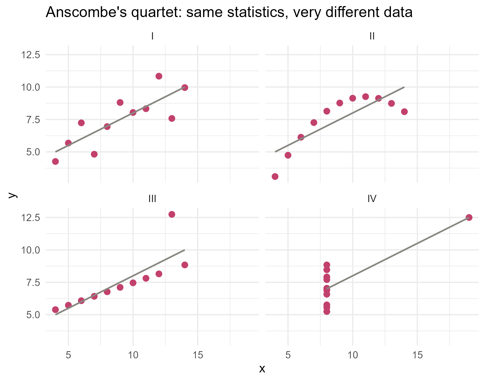
Set I is a noisy straight line. Set II is a smooth curve. Set III is a perfect line with one outlier, and in set IV a single point creates the whole relationship. The numbers alone would never tell you that. Always plot your data.
Your first ggplot
ggplot2 isn’t part of base R. It’s a package: a bundle of extra functions written by the R community. You install a package once on each computer, and load it in every session:
install.packages("ggplot2") # once per computer (it comes with the tidyverse)
library(ggplot2) # at the start of every scriptThe live boxes already have ggplot2 installed, but you still need library(ggplot2). If you forget, you’ll see could not find function “ggplot”. We’ll use the datasets you know from the last lesson, so let’s load everything:
library(ggplot2)
batches <- read.csv("data/reactor_batches.csv")Every ggplot is built from three parts:
- Data: the data frame to plot.
- Aesthetic mappings: which variable goes to which visual property, like the x position, the y position or the color. You write them inside
aes(). - Geoms: the shapes that represent the data, like points, bars, lines or boxes. Each one is a function starting with
geom_.
You start with ggplot() and add layers with +. Here’s the nitric acid plant again:
ggplot(stackloss, aes(x = Air.Flow, y = stack.loss)) +
geom_point()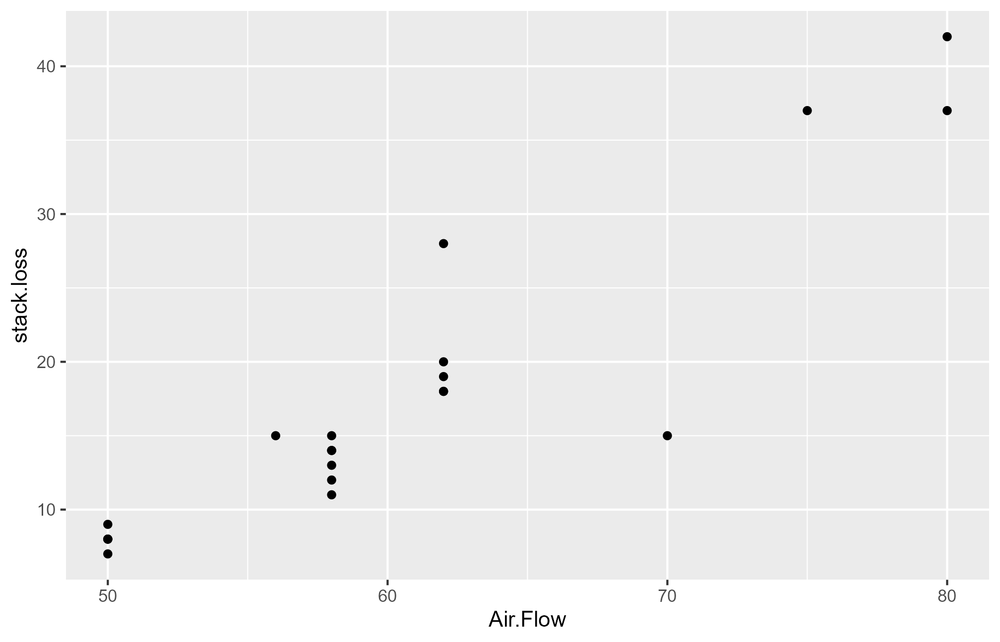
Read it as: “Take stackloss, put air flow on the x axis and stack loss on the y axis, and draw a point for each day.” The harder the plant runs, the more ammonia escapes. Now let’s add one more layer:
ggplot(stackloss, aes(x = Air.Flow, y = stack.loss)) +
geom_point() +
theme_minimal()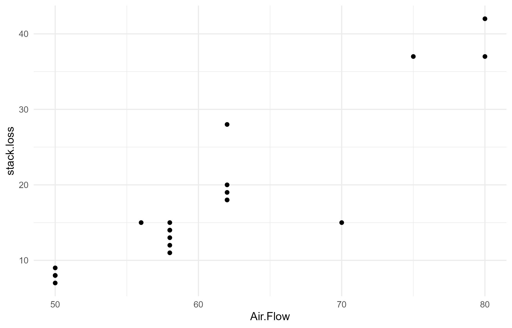
theme_minimal() swaps the gray background for a cleaner look. Themes are just another layer, and I’ll add one to most charts from now on.
Your turn. The Puromycin data comes from an enzyme kinetics experiment. Plot the reaction rate (rate, on y) against the substrate concentration (conc, on x).
Put the column names, without quotes, after x = and y =.
ggplot(Puromycin, aes(x = conc, y = rate)) +
geom_point()Scatterplots: two numbers at once
A scatterplot shows how two numerical variables relate. When you describe one, look at four things: its direction (up or down), its form (straight or curved), its strength (tight or scattered), and any unusual points. Here’s residence time against yield for our batches:
ggplot(batches, aes(x = residence_min, y = yield_pct)) +
geom_point() +
theme_minimal()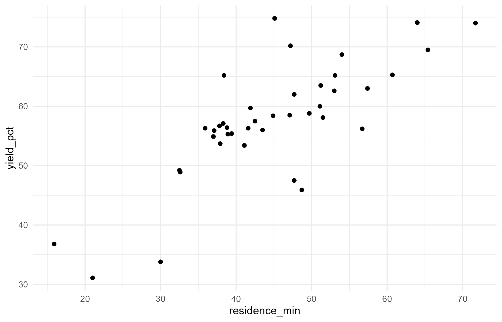
Up, roughly straight, and fairly strong: longer in the reactor, higher yield. Notice that the three poorest batches, down near 30–37%, all had short residence times.
To bring in a third variable, map it to color, inside aes():
ggplot(batches, aes(x = residence_min, y = yield_pct, color = shift)) +
geom_point(size = 2) +
theme_minimal()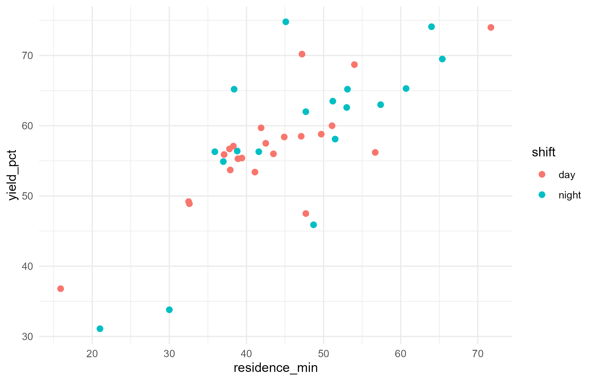
ggplot2 picks the colors and adds a legend for you. Here the two shifts are well mixed, so the shift doesn’t seem to matter much. Other aesthetics you can map include shape, size and alpha (transparency).
A second layer, geom_smooth(), adds a trend line. In Module 2 you’ll learn exactly how that line is computed.
ggplot(batches, aes(x = residence_min, y = yield_pct)) +
geom_point(alpha = 0.6) +
geom_smooth(method = "lm", formula = y ~ x) +
theme_minimal()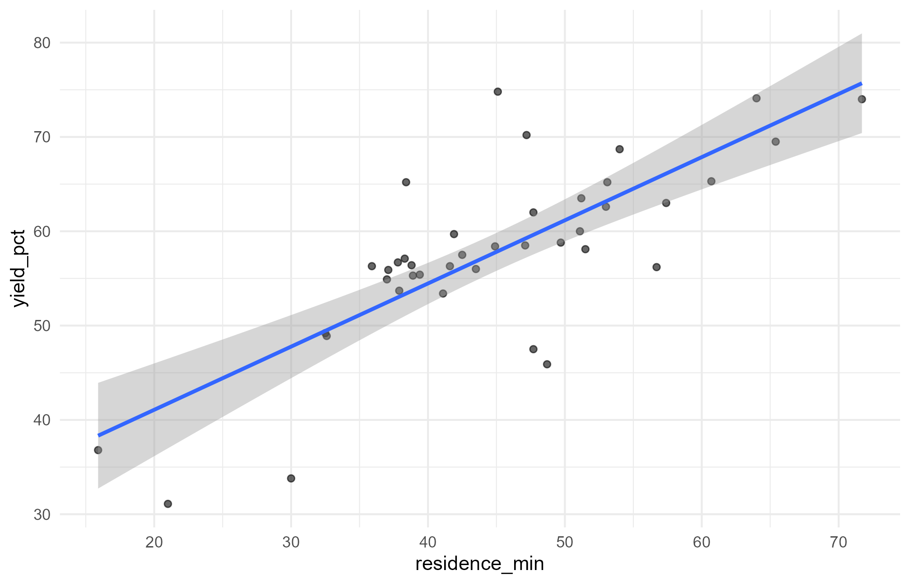
alpha = 0.6 makes the points a little see-through, which helps when lots of them overlap. Notice that it goes outside aes(), because it’s a fixed setting rather than a variable.
Here’s the rule that trips everyone up at first: inside aes() means “let this variable decide”, and outside aes() means “use exactly this value”. aes(color = shift) colors by shift. geom_point(color = "hotpink") makes every point hot pink.
Your turn. Make the Puromycin scatterplot again, with the points colored by state: whether the cells were treated with the drug puromycin or not.
Inside aes(), map the color to the state variable: color = state.
ggplot(Puromycin, aes(x = conc, y = rate, color = state)) +
geom_point()This is the classic shape of Michaelis–Menten kinetics: the rate rises quickly at first, then levels off once the enzyme is working flat out. The treated cells level off at a higher rate.
Histograms: one number, many batches
A histogram shows the distribution of one numerical variable: which values are common and which are rare. It divides the range into bins, and draws a bar showing how many observations fall in each one:
ggplot(batches, aes(x = yield_pct)) +
geom_histogram(binwidth = 5) +
theme_minimal()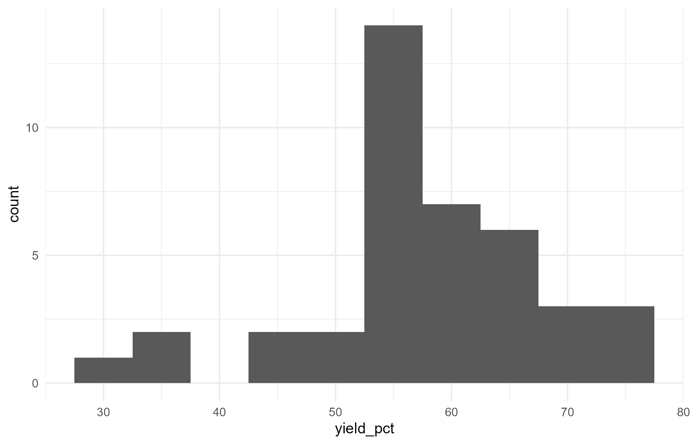
Most batches land in the high 50s, a handful do much better, and a few poor ones sit way down near 30–40%. Those low ones deserve a closer look.
The bin width matters. Too wide and you lose the shape; too narrow and the picture gets noisy. Always try a few. fill sets the color inside the bars, and color sets their outline:
ggplot(batches, aes(x = yield_pct)) +
geom_histogram(binwidth = 2.5, fill = "#C2416C", color = "white") +
theme_minimal()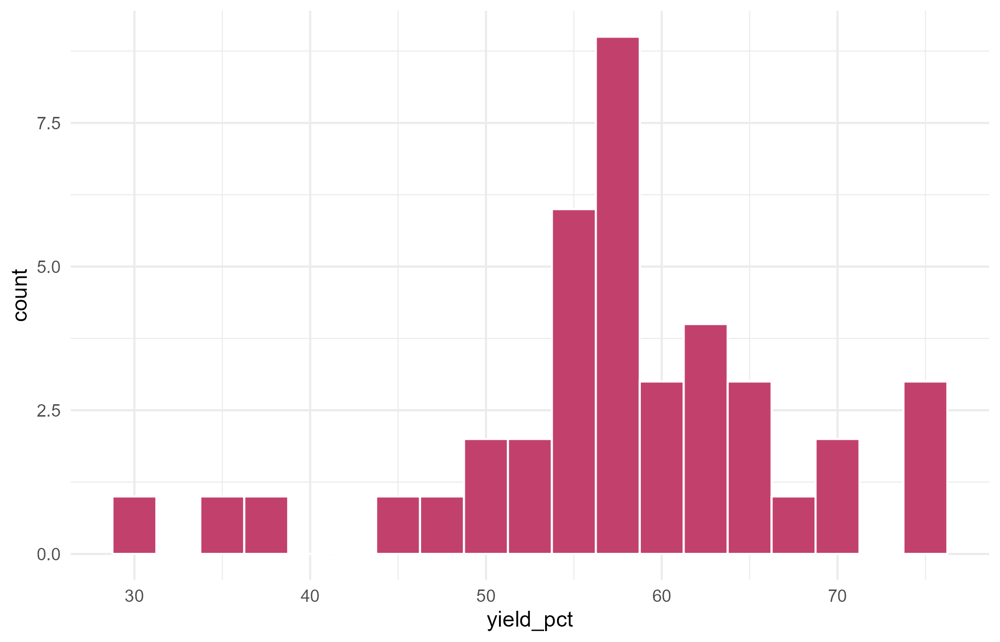
Your turn. Make a histogram of the purities (purity_pct) with a bin width of 0.25 percentage points.
The geom is geom_histogram(), and its binwidth argument sets the bin width.
ggplot(batches, aes(x = purity_pct)) +
geom_histogram(binwidth = 0.25)Most batches sit between 98.5% and 99.5%, with a tail of impure ones below the 98.5% spec.
Boxplots: comparing groups
A boxplot sums up a distribution in five numbers, which makes it perfect for comparing groups side by side:
ggplot(batches, aes(x = catalyst, y = yield_pct)) +
geom_boxplot() +
theme_minimal()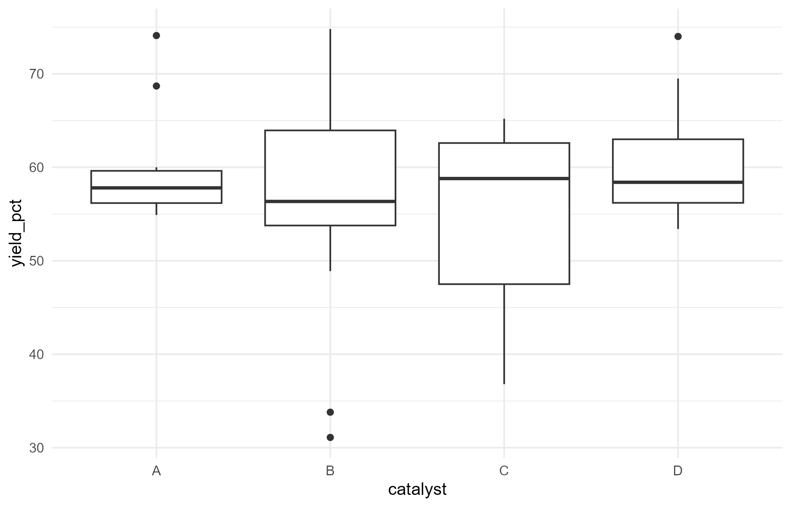
The thick line is the median, the middle value. The box spans the middle half of the batches, from the first quartile (25%) to the third (75%). The whiskers reach out to the furthest values within 1.5 box-lengths of the box, and anything beyond that gets its own point. Lesson 7 covers these properly.
Interesting! The medians are all between 56% and 59%. The catalysts look much more alike here than their means did in the last lesson, because a few very low batches dragged some of the means down.
A boxplot hides how many observations there are. Adding the points themselves, nudged sideways a little with geom_jitter() so they don’t overlap, shows the data:
ggplot(batches, aes(x = catalyst, y = yield_pct)) +
geom_boxplot(outlier.shape = NA) +
geom_jitter(width = 0.15, alpha = 0.5) +
theme_minimal()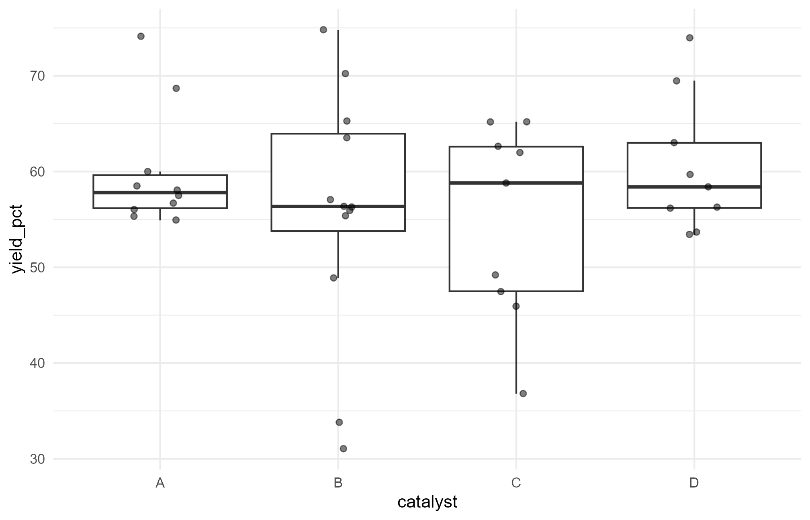
outlier.shape = NA stops the boxplot from drawing its outliers, because the jittered points already include them.
Your turn. Compare the purity (purity_pct) of the four catalysts with boxplots.
Start from ggplot(batches, aes(x = catalyst, y = purity_pct)), then add the boxplot geom.
ggplot(batches, aes(x = catalyst, y = purity_pct)) +
geom_boxplot()Bar charts: counting categories
For a categorical variable, a bar chart shows how many observations fall in each category. geom_bar() does the counting for you:
ggplot(batches, aes(x = catalyst)) +
geom_bar() +
theme_minimal()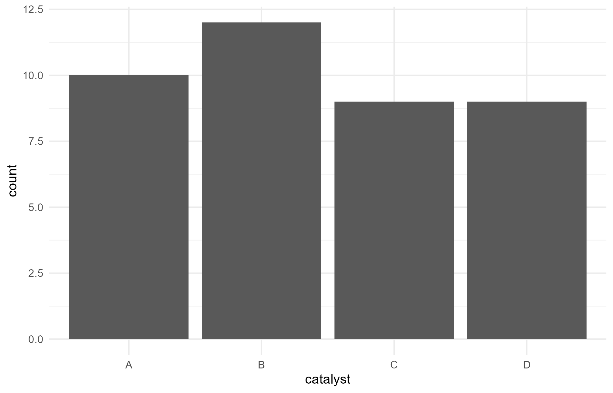
Add a second categorical variable with fill. By default the bars stack up. position = "dodge" puts them side by side, and position = "fill" turns each bar into proportions:
ggplot(batches, aes(x = catalyst, fill = on_spec)) +
geom_bar(position = "fill") +
labs(y = "share of batches") +
theme_minimal()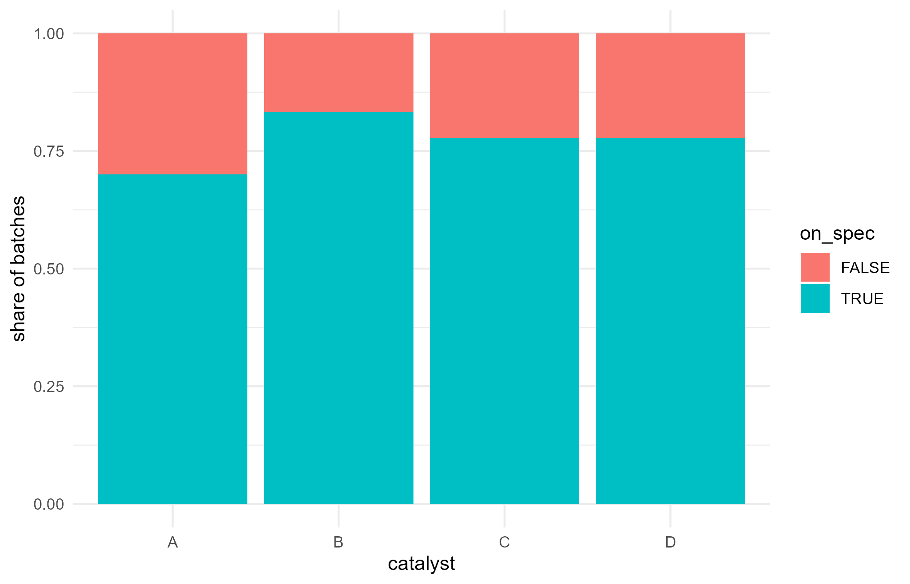
Each bar now shows the share of on-spec (TRUE) and off-spec (FALSE) batches for one catalyst.
If you already have the numbers to plot, use geom_col() instead, which takes the bar heights from a y variable:
solvents <- data.frame(solvent = c("acetone", "methanol", "ethanol", "water"),
bp_C = c(56.1, 64.7, 78.4, 100))
ggplot(solvents, aes(x = solvent, y = bp_C)) +
geom_col() +
theme_minimal()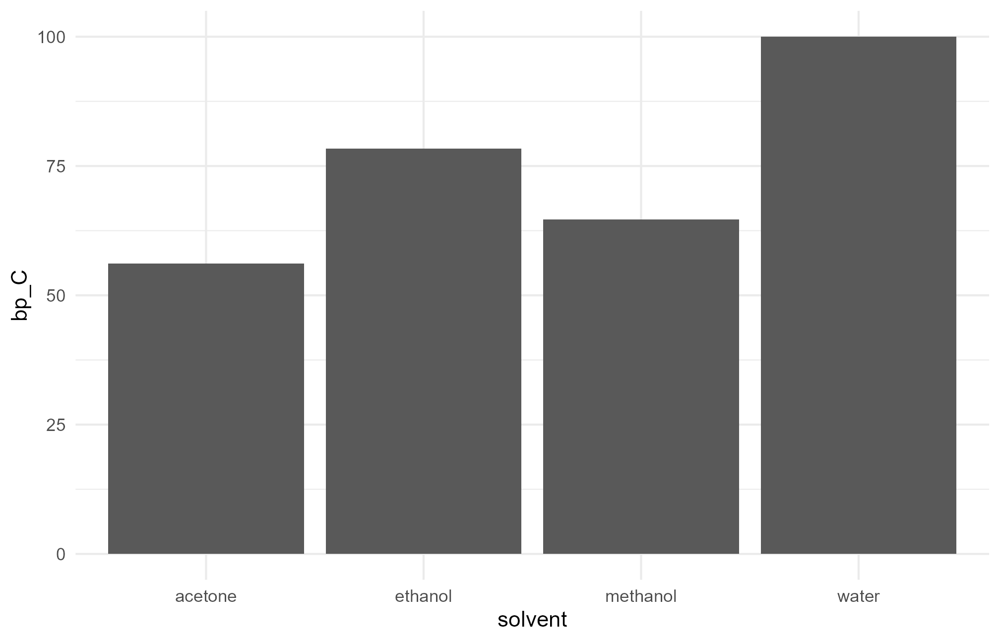
Your turn. Count the batches on each shift, with the bars filled by on_spec and placed side by side.
The argument that places bars side by side is position, and its value is "dodge".
ggplot(batches, aes(x = shift, fill = on_spec)) +
geom_bar(position = "dodge")Facets: small multiples
Facets split a chart into panels, one for each value of a categorical variable. A row of similar small charts is often clearer than one crowded chart:
ggplot(batches, aes(x = residence_min, y = yield_pct)) +
geom_point() +
facet_wrap(~ catalyst, nrow = 1) +
theme_minimal()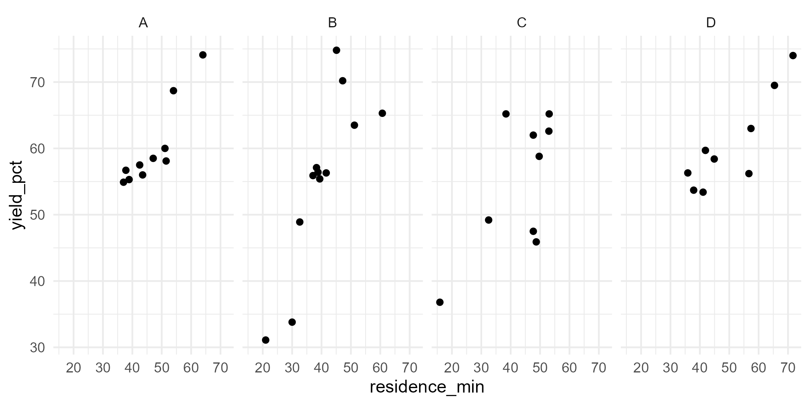
~ catalyst is a formula, read as “by catalyst”. The same upward trend shows up for every catalyst. facet_grid(shift ~ catalyst) would make a grid, with rows for one variable and columns for another.
Your turn. Plot purity (purity_pct, y) against temperature (temp_C, x), with one panel for each shift.
facet_wrap() takes a formula: ~ variable.
ggplot(batches, aes(x = temp_C, y = purity_pct)) +
geom_point() +
facet_wrap(~ shift)You’ll see a warning that 2 rows were removed: those are the batches with no temperature.
Titles, labels and scales
A chart for someone else needs a title and readable axis labels, with units. labs() sets them all. Here’s the vapor pressure of mercury:
ggplot(pressure, aes(x = temperature, y = pressure)) +
geom_point() +
geom_line() +
labs(
title = "Mercury's vapor pressure climbs steeply with temperature",
x = "Temperature (°C)",
y = "Vapor pressure (mmHg)"
) +
theme_minimal()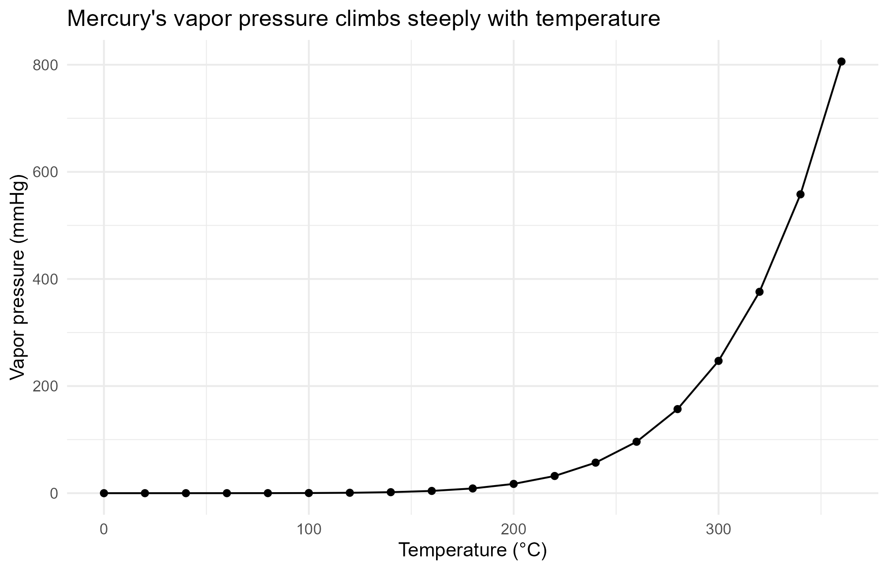
Below about 150 °C, the points are squashed flat against the bottom. When values span several orders of magnitude, like this, a log scale spreads them out. Each step up the axis means “ten times more”:
ggplot(pressure, aes(x = temperature, y = pressure)) +
geom_point() +
geom_line() +
scale_y_log10() +
labs(x = "Temperature (°C)", y = "Vapor pressure (mmHg, log scale)") +
theme_minimal()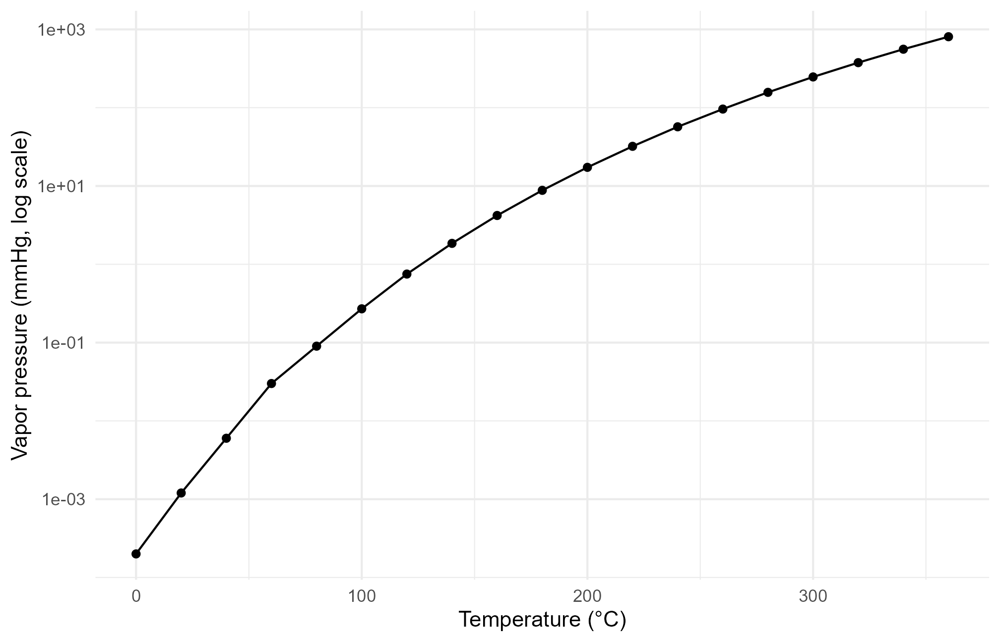
Now you can read every point, from 0.0002 mmHg at 0 °C up to 806 mmHg at 360 °C. In RStudio, ggsave("vapor_pressure.png", width = 7, height = 4.5) saves your latest plot as an image.
Your turn. Give the stack loss chart a title of your choice, and axis labels that a reader would understand.
labs() takes named arguments separated by commas: title = "...", x = "...", y = "...".
ggplot(stackloss, aes(x = Air.Flow, y = stack.loss)) +
geom_point() +
labs(title = "Running the plant harder loses more ammonia",
x = "Air flow (rate of operation)",
y = "Stack loss (10 × % ammonia lost)")Habits of good charts
A chart is an argument, so make it an honest one. These habits help:
Choose the chart for the job.
You want to show Use The distribution of one number A histogram or boxplot A number across groups Boxplots side by side, with the points How two numbers relate A scatterplot How often each category occurs A bar chart Change over time A line chart (Module 6) Label everything, with units. “temp_C” is a column name; “Reactor temperature (°C)” is a label.
Start bars at zero. A bar’s length shows its value, so cutting off the bottom exaggerates differences. (Scatterplots and line charts don’t need zero.)
One y-axis per chart. With two different y-scales, you can make almost any two lines look related. Show two measures as two charts instead.
Don’t rely on color alone. About 1 in 12 men and 1 in 200 women have some color vision deficiency. Choose colors that stay distinct for them, and keep a legend or labels so every group can be identified.
Show the data, and say what you found. A title like “Hotter batches are less pure” tells the reader what to look for.
Here’s a chart with all of those habits applied. The two colors were chosen to stay distinct for readers with the most common kinds of color blindness, and the dashed line marks the spec:
ggplot(batches, aes(x = temp_C, y = purity_pct, color = on_spec)) +
geom_hline(yintercept = 98.5, linetype = "dashed", color = "#898781") +
geom_point(size = 2.5) +
scale_color_manual(values = c("#C2416C", "#2a78d6"), breaks = c(FALSE, TRUE),
labels = c("Off spec", "On spec")) +
labs(title = "Hotter batches are less pure",
subtitle = "The dashed line is the 98.5% purity spec",
x = "Reactor temperature (°C)", y = "Purity (%)", color = NULL) +
theme_minimal(base_size = 13)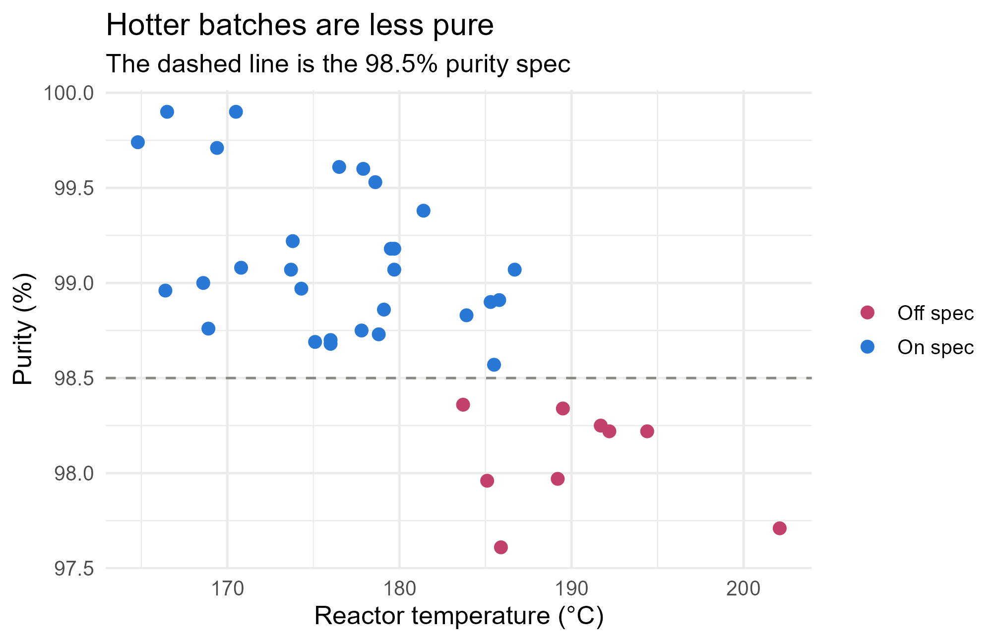
scale_color_manual() lets you choose the colors yourself. ggplot2 also has scale_color_viridis_d(), a ready-made palette that works well for color-blind readers.
Common ggplot2 mistakes
The + at the start of a line. R treats the first line as a complete command, and then doesn’t know what to do with the second:
ggplot(batches, aes(x = residence_min, y = yield_pct))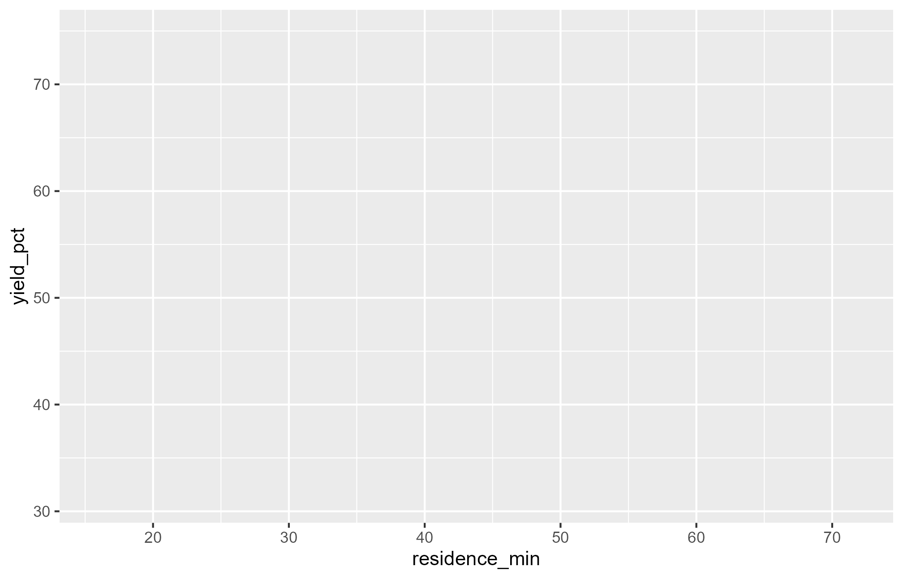
+ geom_point()
#> Error:
#> ! Cannot use `+` with a single argument.
#> ℹ Did you accidentally put `+` on a new line?The first line draws an empty chart, and the second gives an error. Always end the line with +.
A fixed color inside aes(). Inside aes(), ggplot2 expects a variable. Put a color name there, and ggplot2 invents a pretend variable that always equals “hotpink”, colors it with its first default color (which isn’t hot pink at all), and adds a legend:
ggplot(stackloss, aes(x = Air.Flow, y = stack.loss)) +
geom_point(aes(color = "hotpink"))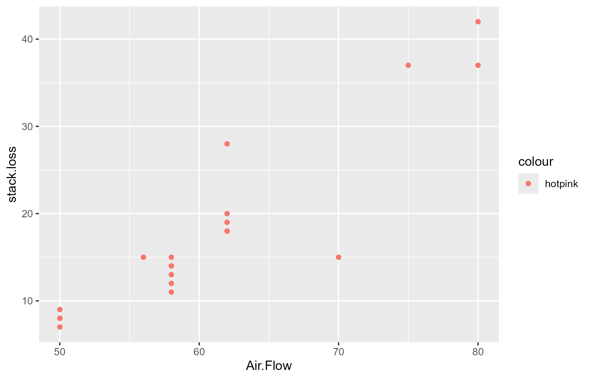
To make every point hot pink, set the color outside aes(): geom_point(color = "hotpink").
|> instead of +. Between ggplot2 layers, you always add with +. The pipe |>, which you’ll meet in the next lesson, doesn’t work there.
Your turn: fix the bug. This code gives an error. Fix it so it draws the scatterplot.
R thinks the first line is a complete command. Where should the + go, so R knows more is coming?
ggplot(batches, aes(x = residence_min, y = yield_pct)) +
geom_point()One more. These points were meant to be hot pink, but they came out salmon-colored with a strange legend. Fix it.
Inside aes(), ggplot2 expects a variable. A fixed color goes directly in geom_point(), outside aes().
ggplot(stackloss, aes(x = Air.Flow, y = stack.loss)) +
geom_point(color = "hotpink")Challenge round
Challenge 1 · Straighten the curve. The Clausius–Clapeyron equation says that for a vapor pressure,
\ln P = -\frac{\Delta H_{\text{vap}}}{R} \cdot \frac{1}{T} + \text{constant},
with T in kelvin. So plotting \ln P against 1/T should give a straight line! Make that plot for the mercury data in pressure.
You can do math right inside aes(). The temperature in kelvin is temperature + 273.15, so 1/T is 1 / (temperature + 273.15).
For the y axis, R’s natural log is log(): y = log(pressure).
ggplot(pressure, aes(x = 1 / (temperature + 273.15), y = log(pressure))) +
geom_point()A beautiful straight line. Its slope is -\Delta H_{\text{vap}}/R, about −7,300 K, which gives \Delta H_{\text{vap}} \approx 7300 \times 8.314 \approx 61 kJ/mol. The textbook value for mercury is 59 kJ/mol. Not bad for one chart! In Module 2 you’ll learn to fit that line properly.
Challenge 2 · Do alarms hurt the yield? Make boxplots of yield_pct for each number of alarms (0, 1, 2 or 3). There’s a catch: alarms is stored as a number, and a boxplot needs groups.
Try ggplot(batches, aes(x = alarms, y = yield_pct)) + geom_boxplot() first, and see what goes wrong.
With a number on the x axis, ggplot2 draws one big box. Turn the alarm counts into categories with factor(alarms), right inside aes().
ggplot(batches, aes(x = factor(alarms), y = yield_pct)) +
geom_boxplot()Batches with 3 alarms have a median yield around 41%, far below the others. (The box labeled NA is the batch whose alarm log was lost.)
Quick quiz
1. Which chart best shows the distribution of a single numerical variable?
A histogram bins the values and shows how many fall in each bin. A scatterplot needs two numerical variables.
2. In ggplot(Puromycin, aes(x = conc, y = rate, color = state)), what does color = state do?
Inside aes(), the color is mapped to a variable, so it changes with the state. One panel per state would need facet_wrap(~ state).
3. What does the thick line inside a boxplot’s box show?
Boxplots are built from quartiles: the box runs from the first to the third quartile, and the line inside is the median.
4. Why should the y axis of a bar chart start at zero?
A bar’s length shows its value. If the axis starts at 60, a bar of 70 looks twice as long as a bar of 65.
5. You want to show the reactor temperature and the yield over the same days. What’s the better design?
With two y-axes, whoever draws the chart chooses the scales, and can make any two lines look related. Separate charts are honest.
6. R says Cannot use + with a single argument. What’s the most likely cause?
R treated the previous line as a complete command, so the + on the next line has nothing to its left.
Wrap-up
Your charts are going to look great. Here’s what you can do now:
- Build in layers: every ggplot is data, plus mappings inside
aes(), plus geoms, joined with+. - Pick the right chart: scatterplots for two numbers, histograms and boxplots for distributions, bar charts for categories.
- Map or set: inside
aes()a variable decides; outside, you set a fixed value. - Polish: facets for small multiples,
labs()for titles and units, log scales for numbers that span orders of magnitude, and themes for the overall look. - Stay honest: bars start at zero, one y-axis per chart, never rely on color alone, and always plot your data.
TipPractice in RStudio (optional, about an hour)
Work in your stats-course project, in a new script called week05.R.
- Explore the batches visually. Load ggplot2 and the data, then make:
- a histogram of
residence_min(try three bin widths and keep the best), - boxplots of
yield_pctbyshift, with the points jittered on top, - a scatterplot of
purity_pctagainstpressure_bar. Is there a pattern? - a bar chart of the batches per
catalyst, filled byshift. Compareposition = "dodge"withposition = "fill".
- a histogram of
- Polish one chart for someone else: a title that states the finding, labels with units, and
theme_minimal(). Save it withggsave("figures/yield_vs_residence.png", width = 7, height = 4.5)(create thefiguresfolder first). - See a misleading chart. Make a bar chart of the mean yield for each catalyst with
geom_col(), then addcoord_cartesian(ylim = c(54, 61)). How much bigger do the differences look? Which version would you trust? - Try two more geoms from the ggplot2 reference:
geom_violin(), andgeom_density()withfill = catalystandalpha = 0.4.
NoteKey words from this lesson
- Grammar of graphics
- The idea that every chart is built from data, aesthetic mappings and geometric objects, combined in layers.
- Aesthetic mapping
-
A link between a variable and a visual property such as position, color or size, written inside
aes(). - Geom
- The shape that represents the data: points, bars, lines, boxes and so on.
- Distribution
- The pattern of values a variable takes: which values occur, and how often.
- Histogram
- A chart of one numerical variable’s distribution, with one bar per range of values (bin).
- Boxplot
- A chart of the median, quartiles and unusual values of a numerical variable, often drawn for several groups.
- Facets
- Small multiples: the same chart drawn once for each value of a categorical variable.
- Log scale
- An axis where each step means “ten times more”, for values that span several orders of magnitude.
NoteWant to read more?
- R for Data Science (2e), “Data visualization”, “Layers” and “Communication”. More geoms, and how to polish charts for other people.
- Fundamentals of Data Visualization by Claus Wilke, free online. Thoughtful, beautifully illustrated advice on choosing and designing charts.